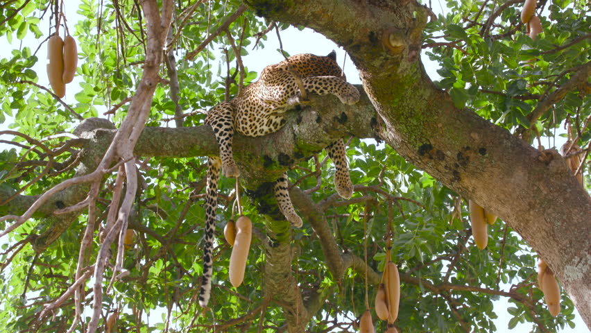
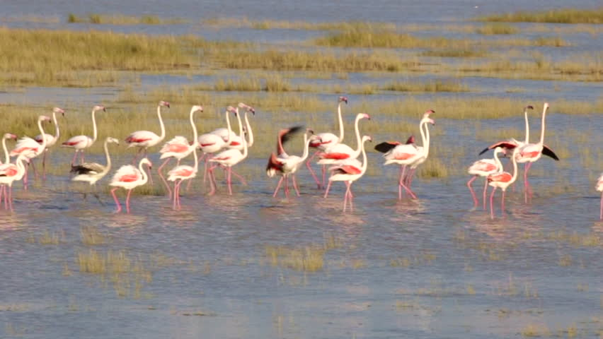
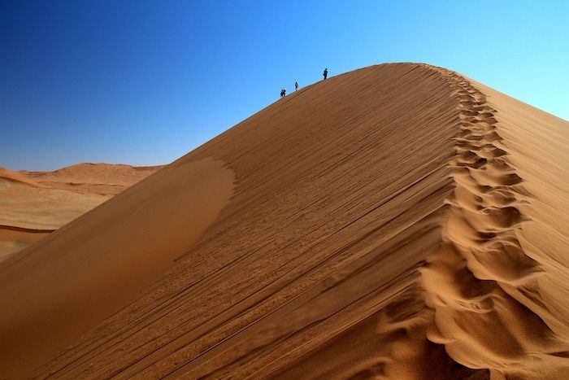

Visit of the Kalahari desert
The Kalahari desert is an interesting desert, so I decided to visit there. I arrived at Maum airport and got on the 4x4 I booked that came with a driver guide. Before traveling much, I asked him for some facts on the Kalahari desert. According to the driver, the desert is 60 million years old and is also 4000 kilometers! I asked what type of desert the Kalahari is. The Kalahari desert is a semi desert. Semi deserts are when parts of the desert get the average water a desert should have (4.3-7.9 inches of water). While other parts get more water than a desert should have (20 inches of water). I also searched up what the meaning of Kalahari is and it means “the great thirst” in Tswana and “a waterless place” in Kgalagadi. The first stop was near some trees. I asked the driver why we stopped there and what  kind of trees they were. He said the trees were sausage trees. He also said that leopards were on top of those trees. When I looked up, I saw a leopard laying on a branch. I asked him why they do that. They lay on those trees because other animals get attracted to those trees. So they just camp there to eat animals that got baited. I asked him if there were any problems in the Kalahari desert. He said that global warming is causing slow growing trees and shrubs to get burned. Only to be replaced with fast growing grass. He also said that global warming is drying up water holes. Before we went to the hotel, it started to rain. I thought it was one in a million that it rained there. Though I thought maybe rain here is common. I asked him and he said that the Kalahari sometimes gets rain or thunderstorms.  Then I saw flamingos going for the water. He said that flamingos go for shrimp in the water that has just been born. He also said that zebras go for the water for their necessary minerals from the water. When we were going to my hotel, I saw some people drinking liquid from a plant. The driver stopped and talked to the men. They were called the San people. He translated their text and said they were thirsty. The plant they were drinking from was called a bi bulb plant. The San people have lived in the Kalahari desert for 60 million years! San people are semi-nomadic meaning they travel wherever there is water. They start fires by spinning a stick on top of another stick. We were getting close to the hotel when the driver said that sleeping for animals is dangerous. I knew that if they slept, they would probably get eaten by predators but the dead animal also attracts other animals. That is one reason why you should not drop your food and not not pick it up. That was my experience with the Kalahari desert. What are your thoughts on the Kalahari desert?
Sources:
Leopard on a sausage tree{kind=link}
Flamingos
{kind=link}
Sand dunes
{kind=link}
Global warming
Getting there
Age of the Kalahari desert
Kalahari desert Wikipedia page
San people
How long the San people lived for
Fun facts
Background